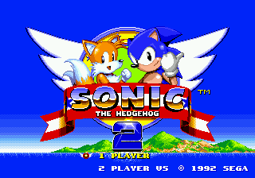

Ir para: Página 1 - Página 2 - Página 3
Sonic the Hedgehog 2 (1992)
 Sonic the Hedgehog 2 é a sequência de grande sucesso do Sonic the Hedgehog original para o Sega Mega Drive. Colocado em desenvolvimento não muito depois da conclusão do primeiro jogo, o título se tornaria um dos videogames de maior sucesso de todos os tempos, vendendo milhões de unidades e consolidando a franquia como um fenômeno cultural no Ocidente. Apresentando Miles "Tails" Prower, o jogo foi lançado mundialmente em 24 de novembro de 1992. Chamado de "Sonic 2sday", o lançamento simultâneo foi um movimento incomum para a época. O jogo eventualmente substituiu o Sonic 1 como o título pack-in padrão para o Mega Drive, sendo empacotado com o modelo Mega Drive II redesenhado.Nessa página, iremos abordar algumas curiosidades do desenvolvimento, como fases e alguns dos protótipos descobertos.
Nick Arcade Prototype
O protótipo "Nick Arcade" do Sonic the Hedgehog 2 é uma build muito antiga com muitos conteúdos reutilizados do Sonic 1, como o nome das fases e música. É muito incompleto, com inimigos e fases ausentes, além de falhas gráficas em todos os lugares. No entanto, os layouts básicos para algumas fases foram concluídos e o Tails foi implementado.
Green Hill (Emerald Hill)
- Como esperado, é a Green Hill do Sonic 1, exceto que agora com colisão quebrada e gráficos com falhas/faltando
- Por causa da matriz de colisão diferente, a maioria das encostas faz Sonic cair do nível e morrer.
- Todos os dados necessários para o Green Hill ainda estão presentes e foram atualizados para usar os formatos de dados do Sonic 2. Por exemplo, os mapas de blocos da fase foram alterados de 256x256 para 128x128, e a arte foi atualizada para parecer correta no modo de 2 jogadores. Infelizmente, esta também é uma das principais razões pelas quais a arte do objeto está quebrada.
Marble Zone (Chemical Plant)
A única outra fase vista durante as aparições do jogo nesse protótipo, a demo da Chemical Plant era visível no fundo de várias fotos. Até que a ROM fosse descartada, era o único vislumbre de suas diferenças.
- O fundo (que não possui animação e tem apenas uma camada de rolagem) tem um tom rosa em vez de verde-oliva, que provavelmente foi alterado para fazer a fase parecer mais industrializado que a versão final.
- Alguns dos edifícios são diferentes, isso se aplica principalmente aos edifícios com luzes retangulares, que menores e mais largas nesse protótipo, mas altas e finas em todos os outros protótipos conhecidos.
Hidden Palace
Talvez essa seja a fase mais interessante (que infelizmente foi cortada).
- Por conta do curto tempo de produção, muitas fases acabaram sendo cortadas do jogo. Uma delas é a Hidden Palace Zone, que ficou muito conhecida na internet. Ela foi descoberta porque alguns arquivos da fase ainda estavam presentes no cartucho. Inclusive, ainda é possível acessá-la ativando um código no acessório Game Genie.
- Essa fase ficou tão famosa entre os fãs que a SEGA decidiu traze-la para a remasterização do Sonic 2 para mobile, com direito a um chefão exclusivo. Ela pode ser acessada pulando em um dos abismos da Mystic Cave.
Labyrinth Zone (Muito bugada!)
Essa é uma fase completamente quebrado. Não se sabe para que esse slot de level seria usado antes de eles reorganizarem os IDs de nível, mas muitas vezes se especula que pode ter sido para Oil Ocean (já que foi uma das primeiras zonas a serem trabalhadas), Metropolis (novamente, uma das primeiras zonas a serem trabalhadas), Death Egg ou Genocide City.
- Sobre o layout quebrado, o motivo é porque o jogo possui um código especifico que carrega os gráficos e o layout da Green Hill Zone de forma diferente. O jogo tenta aplicar isso a Labyrinth Zone, mas devido ao uso na Chemical Plant, obviamente não funciona bem.
- Se você entrar no Marble Zone primeiro, o jogo carrega parcialmente o layout para aquela fase, independentemente do ato.
Star Light Zone
A fase mais completa do protótipo, e a única que pode ser jogada sem usar level select. No Nick Arcade, os competidores jogaram o Ato 1 e tiveram que coletar 25 anéis em 30 segundos.
- Essa fase possui um badnik que foi removido da versão final: um caracol de casca vermelha. Esse inimigo do tipo Motobug se move lentamente no chão. Quando ele vê o jogador, ele ataca. Este inimigo foi substituído pelos "Cocos" no jogo final.
Scrap Brain Zone (Hill Top)
Uma versão preliminar do Hill Top. Por ocupar o antigo slot de nível Scrap Brain Zone, há um pouco de esquisitice residual. Leia mais sobre isso.
- Embora o efeito parallax tenha sido implementada em sua maioria, as nuvens (ou o que quer que sejam) no fundo ainda não se movem sozinhas. As montanhas azuis ao fundo também não se movem ainda.
- A lava não causa dano, isso acontece pois os objetos de dano reais ainda não foram colocados.
- A lista de objetos de debug da Hill Top inclui o Buzzer, Snail e Masher (inimigos) da Emerald Hill. Apenas o Masher não tem seus gráficos sobrescritos.